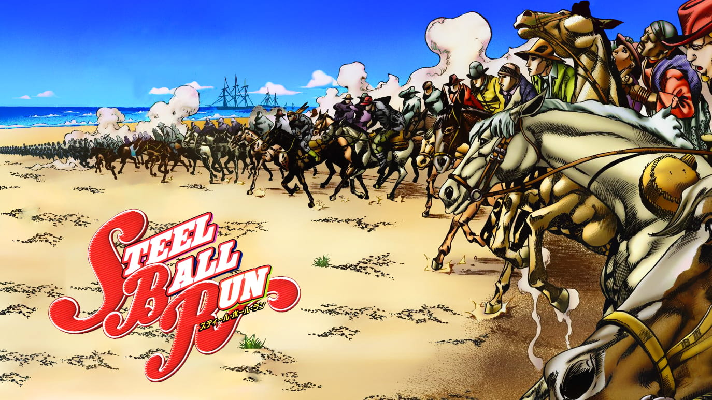

Set in Italy in the year 2001, the story follows Giorno Giovanna and his dream to rise within the Neapolitan mafia and defeat the boss of Passione, the most powerful and influential gang, in order to become a "Gang-Star". With the aid of a capo and his men, and fueled by his own resolve, Giorno sets out to fulfill his goal of absolving the mafia of its corruption.
Set in the U.S. in 1890, the story follows Johnny Joestar, a paraplegic ex-jockey, and Gyro Zeppeli, master in the mystic art of the Spin, as the two compete in the trans-American Steel Ball Run race and uncover its benefactor's sinister motivations.